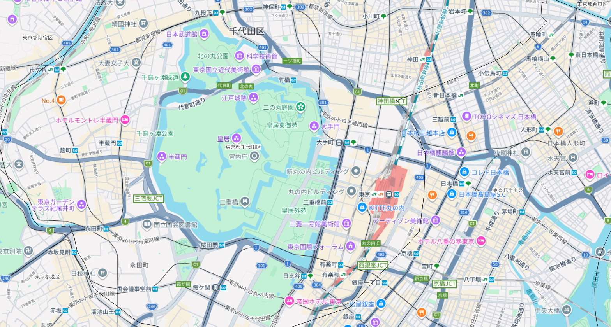
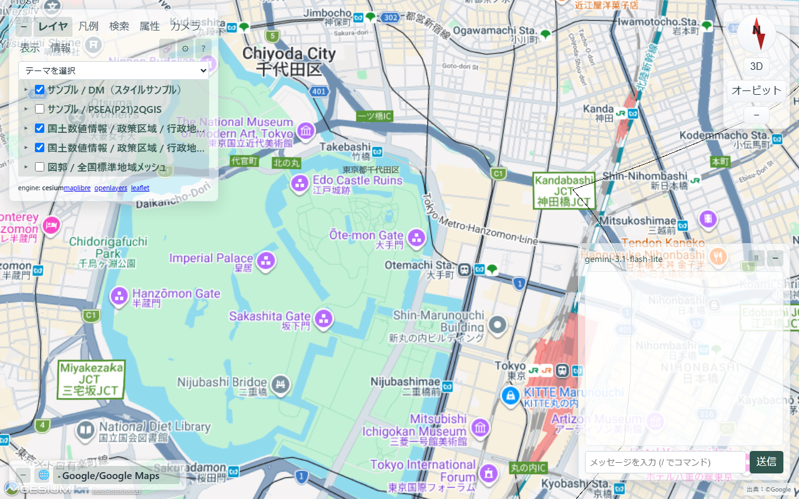
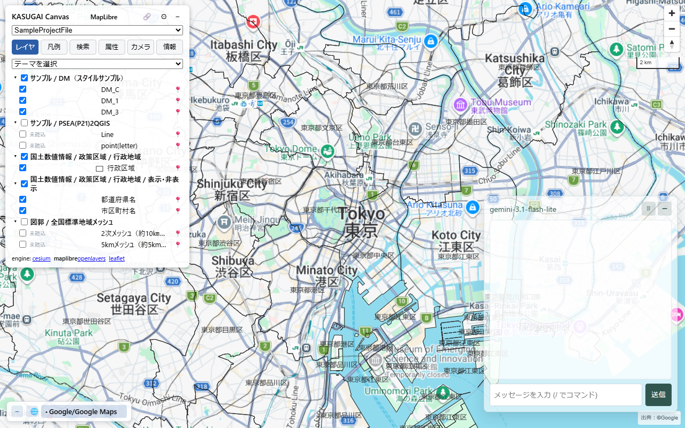
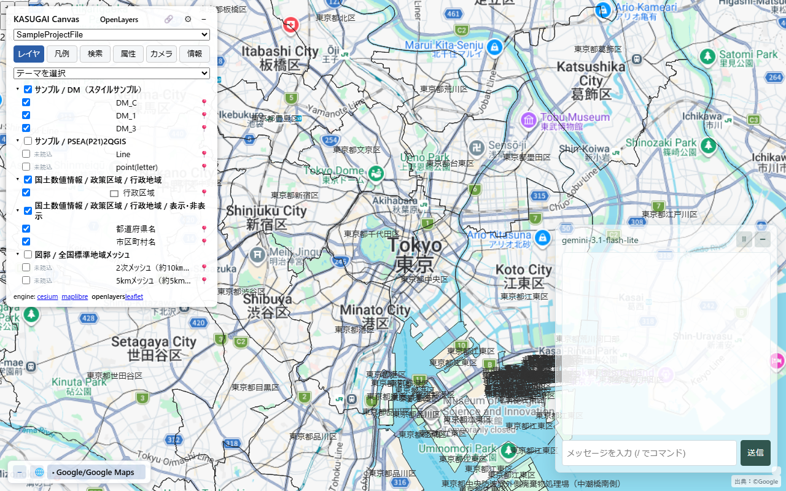
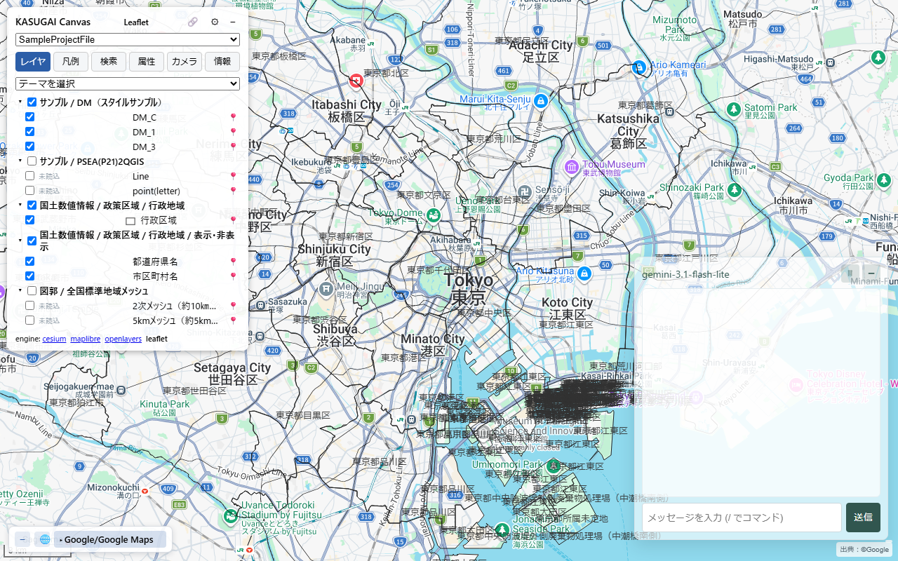

1. これは何か
kasugai-canvas-web は、地理情報可視化システム
KASUGAI Canvas のブラウザ版エンジンを GitHub Pages で
静的配信する公開ホストです。QGIS プラグイン
geo_webview が出力する .kasc + DATA/
プロジェクトを、KASUGAI Canvas をインストールしていない環境でも
ブラウザだけで開けます。
2. 基本の使い方（URL の形式）
次の形式の URL を開くだけで、指定した .kasc プロジェクトが再生されます。
https://yamamoto-ryuzo.github.io/kasugai-canvas-web/<ステージ>/<エンジン>/?kasc=<.kasc のURL>ステージ（配信チャンネル）
| パス | 内容 | 用途 |
|---|---|---|
stable/ | 安定版（既定） | 通常はこちらを使用 |
unstable/ | 開発版（kasugai_canvas develop 同期） | 新機能の先行確認 |
latest/ | stable/ への互換リダイレクト | 旧リンク用 |
エンジン
| 名前 | 種類 | 特徴 |
|---|---|---|
cesium | 3D（CesiumJS） | メインエンジン。3D 表示・オービット・カメラ |
maplibre | 2D（MapLibre GL） | 高速なベクター描画 |
openlayers | 2D（OpenLayers） | 汎用 2D マップ |
leaflet | 2D（Leaflet） | 軽量・シンプル |
例
# 公開ホスト上の .kasc を開く（どこからでも再生可能）
https://yamamoto-ryuzo.github.io/kasugai-canvas-web/stable/cesium/?kasc=https%3A%2F%2Fexample.com%2Fproj%2Fkasugai_canvas.kasc
# geo_webview の内蔵サーバー(:8089)が配信する .kasc を開く（自分のPC上で）
https://yamamoto-ryuzo.github.io/kasugai-canvas-web/stable/maplibre/?kasc=http%3A%2F%2Flocalhost%3A8089%2Fexport-data%2Fkasugai_canvas.kasc
?kasc= の値は URL エンコードして指定します。
参照先の DATA/ は .kasc からの相対パスで解決されるため、
.kasc と DATA/ を同じフォルダに置いて配信してください。
3. QGIS から使う（geo_webview プラグイン）

QGIS で開いたプロジェクト。この地図状態がそのまま .kasc + DATA/ に出力される
1Export — geo_webview パネルの
Export ボタンで、表示中レイヤを .kasc + DATA/
（＋エンジン起動 HTML + kasugai_canvas.zip）として出力します。
出力先は KASUGAI Canvas インストール済みなら
<install>/QGIS_projects/<プロジェクト名>/、
未インストールなら <ドキュメント>/kasugai_canvas_qgis
（保存先ボタンで変更可）。
2▶ WebView — Engine コンボで
エンジンを選んで実行すると、エクスポート→ホスト版エンジン URL
（?kasc=http://localhost:8089/export-data/...）をブラウザで開きます。
内蔵 HTTP サーバー（:8089）がデータを配信するため、
サーバー ON とインターネット接続が必要です。
3（参考）▶ Canvas — インストール済み KASUGAI Canvas（:8510）へプロジェクト登録して開く経路。 再エクスポートは行いません（事前に Export が必要）。
4. 再生画面（エンジン別サンプル）
同じ .kasc プロジェクトを 4 エンジンで開いた例です。
レイヤツリー・テーマ選択・ベースマップ切替・検索/属性/カメラタブは
全エンジン共通です。

cesium — 3D 表示。オービット・カメラ操作・3D Tiles 対応

maplibre — 2D 高速描画。レイヤツリーとテーマ選択

openlayers — 汎用 2D マップ

leaflet — 軽量シンプルな 2D マップ
スクリーンショットは geo_webview が出力したサンプルプロジェクト （東京・皇居周辺。行政地域・標準地域メッシュ等の GPKG/GeoJSON レイヤ＋ ベースマップ群）を再生したものです。
5. 自分のデータを外部へ配信する
- geo_webview の
Exportで.kasc + DATA/とエンジン起動 HTML（index.html等）を出力 - 出力フォルダ一式を任意の静的ホスト（GitHub Pages、Netlify、S3 等） にアップロード
<ホスト>/<engine>/?kasc=<.kasc のURL>で共有
同梱の kasugai_canvas.zip は Re:Earth Visualizer の
geo_suite プラグイン（qgis: インスペクタ行）へそのまま
取り込めるパッケージです。
6. 注意点
- localhost のデータ参照 —
?kasc=http://localhost:8089/...を開くとき、ブラウザは 自分の PC のサーバーへアクセスします。Chrome では 「ローカルネットワークへのアクセス」の許可を求められる場合があり、 許可しないとデータが読み込めません（他者の PC からは localhost が 違うマシンを指すため、同一マシン上でのみ有効です）。 - 公開 URL のデータ — 静的ホストに置いた
.kasc + DATA/は制約なくどこからでも再生できます。 外部共有はこちらが確実です。 - スナップショット方式 — 出力物はエクスポート時点の 状態です。QGIS 側の編集は再エクスポートで反映してください。
- サポートするソース — GeoJSON/GPKG/GeoParquet/ FlatGeobuf はネイティブ参照、CSV/TSV は DuckDB 経由、XYZ/3D Tiles/ WMS はタイル参照。その他のベクターは GeoJSON(EPSG:4326) へ変換されます。